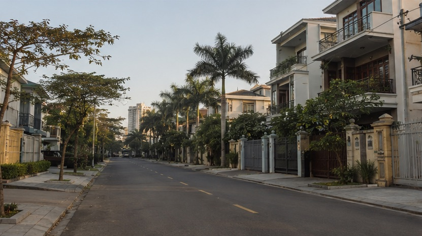
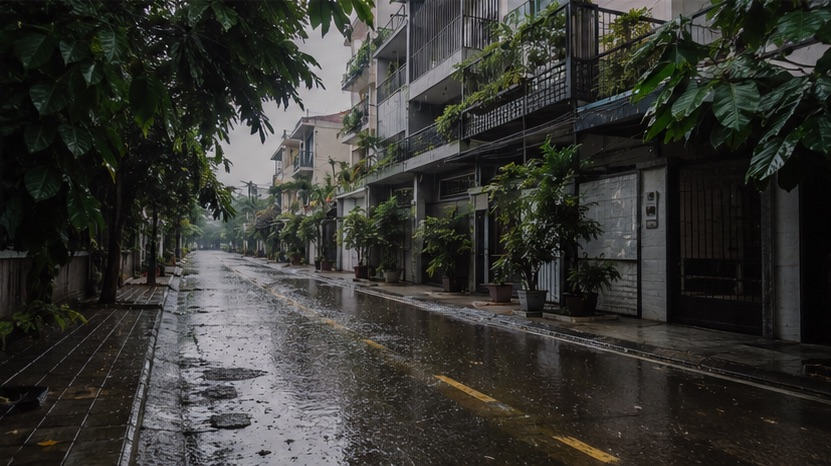

Neighbourhood guides
Son Tra or My An: Where Should You Rent in Da Nang?
Bài viết này hiện chỉ có bản tiếng Anh. Menu và phần điều hướng đã chuyển sang tiếng Việt. Alice nói tiếng Việt và tiếng Anh, nhắn tin cho cô nếu bạn cần giải thích bằng tiếng Việt.
Key takeaways
- Son Tra is quieter, more spread out and closer to the city center, but you need a scooter. Almost everything is a five to ten minute ride rather than a walk.
- Rent is close between the two for the same kind of apartment. Furnishing and the age and class of the building move the price more than the neighborhood does, and An Thuong stock is mostly older because the area has no land left to build on.
- In my current listings a one bedroom runs $570 to $840 a month on the My An side and $645 to $690 in Son Tra, with entry level units from $380. Two bedroom apartments start at $760 in My An and $1,045 in Son Tra, and ocean view stock runs well above both.
- Since July 2025 neither name is an official district anymore. My An is part of Ngu Hanh Son ward, and the old Son Tra district became An Hai ward and Son Tra ward. Your lease and your visa paperwork will use the new names even though every listing site still uses the old ones.
Where are Son Tra and My An?
Both sit on the east side of the Han River, on the beach strip, about 3 kilometers apart. My An is the southern half of that strip, running inland from the beach road at Vo Nguyen Giap toward Ngu Hanh Son street. Son Tra is the northern half, from the Dragon Bridge up to the peninsula with the big white Lady Buddha statue on it.
The peninsula itself is a nature reserve with monkeys and two resorts. Nobody rents up there, so when people say "I live in Son Tra" they mean the flat residential grid at the bottom of it, around Pham Van Dong and Phan Tu and Le Van Thu.
The distance between the two areas is small enough that plenty of my clients view apartments in both on the same afternoon. The difference in how they feel is not small at all.
Wait, do these places still exist?
Officially, no. Vietnam abolished the district level of government on 1 July 2025 and merged the wards underneath it. My An ward was folded into a larger Ngu Hanh Son ward along with Khue My, Hoa Hai and Hoa Quy. The old Son Tra district was split into two: An Hai ward, which absorbed Phuoc My, An Hai Bac and An Hai Nam, and Son Tra ward, which took Tho Quang, Nai Hien Dong and Man Thai.
Nothing moved. Your building is where it always was. But the address on your rental contract, your temporary residence registration and your bank forms uses the new ward name, while Airbnb, Facebook groups and half the listing sites still say My An or An Hai Bac.
This trips people up more than it should. If a landlord hands you a contract with a ward name you have never seen, that is normal, and it is not a sign that something is wrong with the paperwork. Ask which old ward it corresponds to if you want to sanity check the location.
Which one is cheaper?
Neither by much, and that surprises people. Two apartments of the same size and the same standard, one on each side of that 3 kilometer gap, usually land close to each other. What actually moves the price here is the furnishing and the class of the building, not the name of the neighborhood. A newer block with a lift, a gym and a proper kitchen prices above an older walk up whichever side of the strip it sits on.
There is one wrinkle worth knowing about An Thuong. The area filled up years ago and there is almost no empty land left in it, so very few new apartment buildings have gone up there. Most of what you will be shown in An Thuong is older stock, with only a handful of new buildings among it, while Son Tra still has room to build. That is the real difference between the two at the same rent: on the Son Tra side that money more often buys you a newer building. What keeps An Thuong from being the cheaper of the two despite the older stock is demand, since landlords there price against short term tourist rentals and against a foreign market that found the area first.
None of this reads cleanly off a listings page, because the two areas hold different stock. My Son Tra inventory leans toward larger sea view apartments, so its headline numbers can sit higher than My An even though ordinary apartments are priced much the same on both sides. Compare specific units, not area averages.
| Property type | My An / An Thuong | Son Tra / An Hai | Notes |
|---|---|---|---|
| Studio or small 1BR, up to 45 m² | $570 to $645 | $440 to $720 | Cheapest active listing in either area is $380 |
| One bedroom, 45 to 60 m² | $570 to $840 | $645 to $690 | The most common expat rental in both areas |
| Two bedroom apartment | $950 to $1,370 | $1,140 to $2,475 | Son Tra stock skews larger and sea view, which lifts the range |
| Three bedroom house or villa | $2,105 to $4,700 | $950 to $3,055 | Son Tra has the cheaper standalone houses by a wide margin |
| Ocean view apartment | $1,335 to $3,135 on the My Khe strip between the two | Price tracks the floor number more than the neighborhood | |
Two costs sit outside the rent in both areas. Electricity is usually billed by the landlord at 4,000 to 6,000 VND per kWh rather than the state rate, which matters a lot if you run air conditioning through the summer. Budget 600,000 to 1,500,000 VND a month for a one bedroom depending on how much you cool it. Water is often a flat 100,000 to 200,000 VND. Apartment buildings add a management fee. Houses do not.
How do Son Tra and My An compare side by side?
The two areas split cleanly along one line: My An sells convenience, Son Tra sells space and quiet. Noise, walking distance, building age and the makeup of the neighbours all follow from that, while the rent itself stays close. This is the comparison I run through with clients before we book a single viewing.
| Factor | My An (An Thuong) | Son Tra (An Hai) |
|---|---|---|
| Best for | Nomads, first timers, anyone without a bike | Families, longer stays, people who want quiet |
| Rent for a 1BR | $570 to $840, from $380 | $645 to $690, from $440 |
| Walk to beach | 3 to 8 minutes from most streets | 5 to 15 minutes, more spread out |
| Ride to Han Market | 10 to 12 minutes | 5 to 8 minutes |
| Ride to the airport | About 15 minutes | About 12 minutes |
| Ride to Hoi An | 35 to 40 minutes | 45 minutes |
| Western food and cafes | Dense, walkable, dozens of options | Thinner, growing, mostly along Pham Van Dong |
| Coworking spaces | Several within walking distance | One or two, usually a ride away |
| Night noise | Bars, live music, karaoke on the main alleys | Mostly residential, quiet after 10pm |
| Street width | Narrow numbered alleys | Wide grid, easier parking |
| Housing stock | Apartments and small blocks | More houses and villas |
| Foreign community | Western and mixed | Large Korean population, more Vietnamese neighbors |
| Tourist churn | High, especially May to August | Low |
How noisy is each one?
My An is noisy in a way that surprises people who booked their first month there off photos. The An Thuong alleys have live music bars, a few late night spots, and construction that starts around 7am because that is when the heat is bearable. Rooms facing an alley with a bar on it will get bass until midnight on weekends.
This is fixable if you view the apartment at the right time. I tell clients to see a unit once during the day and once around 9pm before signing anything longer than three months. Landlords never volunteer that the place two doors down has a sound system.
Son Tra is quiet by comparison, with one caveat. If you go far north into the old Tho Quang ward you are near the fishing port, and on certain days with the wind in the wrong direction you will smell it. Most people renting in Son Tra stay south of Phan Ba Phien and never notice.
Can you live without a motorbike?
In My An, yes, and this is the single strongest argument for choosing it. Groceries, a gym, a dozen restaurants, laundry, a coworking space and the beach all sit inside a ten minute walk of most An Thuong addresses. I have clients who spent a year there and never rented a bike.
In Son Tra, not really. The grid is wide and the blocks are long, so what looks like a short distance on a map is a fifteen minute walk in 34 degree heat. You can get by with Grab, but it adds up, and you will feel stuck on days when the app is slow. Plan on renting a scooter for 1,000,000 to 1,500,000 VND a month, or buying a used one.

The honest version: if you are not comfortable riding in Vietnamese traffic, rent in My An. You are not paying much of a premium for the location, a year of daily Grab rides costs more than any gap in the rent, and you will actually leave the apartment.
What happens in the rainy season?
Da Nang's wet season runs roughly from September to December, with October and November doing most of the damage. Both areas flood in a heavy storm, but they flood differently.
The An Thuong alleys are narrow and the drainage was built for a much smaller neighborhood. Water pools fast and can sit ankle deep for a few hours after a hard afternoon. Ground floor units and anything with a sunken entrance are the ones that suffer.
Son Tra has wider streets and drains better in the residential grid, but the low lying pockets near the river in the old Nai Hien Dong area take on water in a serious storm. The 2022 flood put water into ground floor properties across the whole east bank, so nowhere on this side is genuinely immune.

Practical advice for either area:
- Avoid ground floor if you are staying through October.
- Ask the landlord directly whether the street floods, and watch how quickly they answer.
- Look at the walls near the floor for a water line during a viewing. The line does not lie.
Who should pick which?
Rent in My An if you are new to Da Nang, staying under six months, working from cafes, traveling without a bike, or you want a social life that does not require planning. Accept that you are trading building age and quiet for convenience, and that some of your neighbors will change every week.
Rent in Son Tra if you are staying a year or more, have a family, work from home, own or plan to buy a bike, or you want a house with actual outdoor space for the price of a two bedroom apartment across the bridge. It is also the better call if you spend time in the city center, since you are one short bridge away rather than crossing town.
The pattern I see most often is people doing a first stint in An Thuong and then moving to Son Tra when they renew. For the same rent they get more space, and often a newer building, once they know the city well enough not to need everything within walking distance. Going the other direction happens too, usually when someone underestimates how much they hate riding a scooter at night in the rain.
Frequently asked questions
Is Son Tra or My An better for expats in Da Nang?
My An suits people who want walkability, western food and an easy social entry point, especially for stays under six months. Son Tra suits people who want more space and quiet, and who are comfortable getting around by motorbike. Neither is objectively better, and the two are only about 3 kilometers apart.
How much is rent in An Thuong per month?
In Alice Rentals listings today, a one bedroom in the An Thuong and Khue My area runs $570 to $840 a month on a six month or longer lease, with the cheapest one bedrooms from $380 and two bedrooms from $760. Electricity, water and building fees are charged on top of the rent.
Is An Thuong the same as My An?
An Thuong is the informal name for the cluster of numbered alleys inside what used to be My An ward, which is where most foreign residents live. Since July 2025 the official address is Ngu Hanh Son ward, but listings, landlords and Facebook groups all still say An Thuong or My An.
Do I need a motorbike to live in Son Tra?
Realistically yes. The streets are wide and the blocks are long, so most errands are a five to ten minute ride rather than a walk. Grab works, but the cost and the waiting add up if you rely on it every day.
Which area of Da Nang floods the most?
Ground floor properties in the narrow An Thuong alleys flood most reliably during heavy rain between September and December, because the drainage there was built for a smaller neighborhood. Low lying streets near the river on the Son Tra side also take on water in severe storms. Renting above ground floor solves most of the problem in both areas.
Is Son Tra safe at night?
Yes. Da Nang has low street crime by regional standards, and Son Tra in particular is a residential area where families are out until late. The usual precautions about bag snatching on quiet streets and about riding at night still apply.
Can foreigners rent in either area without a work permit?
Yes. A tourist visa is enough to sign a residential lease in Vietnam. What you do need is a passport, and the landlord must register you with the local police for temporary residence, which is their legal responsibility rather than yours.
How far is My An from Hoi An?
About 35 to 40 minutes by motorbike or 30 minutes by car, going south along the coast road. Son Tra adds roughly ten minutes to that.